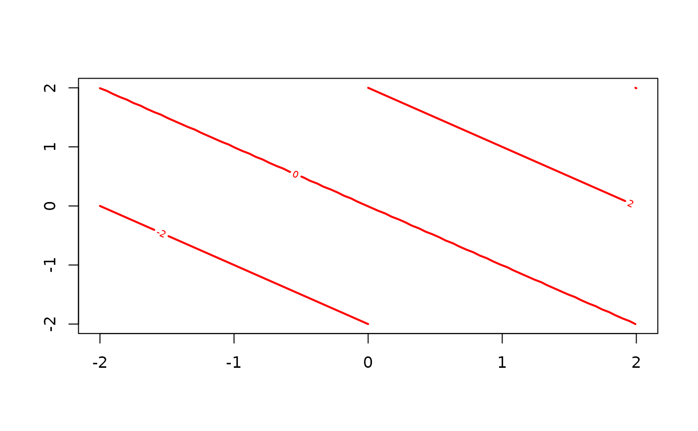
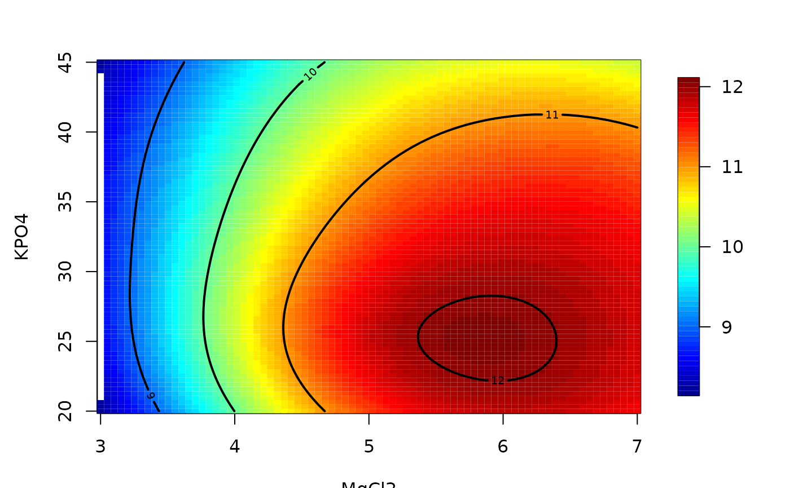

plot.surface.RdPlots a surface object in several different ways to give 3-d information e.g. a contour plots, perspective plots.
# S3 method for surface
plot(x, main = NULL, type = "C", zlab = NULL, xlab = NULL,
ylab = NULL, levels = NULL, zlim = NULL, graphics.reset = NULL,
labcex = 0.6, add.legend=TRUE, ...)A surface object. At the minimum a list with components x,y and z in the same form as the input list for the standard contour, persp or image functions. This can also be an object from predictSurface.
Title for plot.
type="p" for a perspective/drape plot (see drape.plot), type="I" for an image plot with a legend strip (see image.plot), type="c" draws a contour plot, type="C" is the "I" option but with contours lines added. type="b" gives both "p" and "C" as a 2X1 panel
z-axes label
x-axes label
y-axes labels
Vector of levels to be passed to contour function.
Reset to original graphics parameters after function plotting. Default is to reset if type ="b" but not for the single plot options.
Sets z limits on perspective plot.
Label sizes for axis labeling etc.
If TRUE adds a legend to the draped perspective plot
Other graphical parameters that are passed along to either drape.persp or image.plot
surface, predictSurface, as.surface, drape.plot, image.plot
x<- seq( -2,2,,80)
y<- seq( -2,2,,80)
# a lazy way to create some test image
z<- outer( x,y, "+")
# create basic image/surface object
obj<- list(x=x, y=y,z=z)
# basic contour plot
# note how graphical parameters appropriate to contour are passed
plot.surface( obj, type="c", col="red")

# using a fields function to fit a surface and evaluate as surface object.
fit<- Tps( BD[,1:4], BD$lnya) # fit surface to data
# surface of variables 2 and 3 holding 1 and 4 fixed at their median levels
out.p<-predictSurface(fit, xy=c(2,3))
plot.surface(out.p) # surface plot
